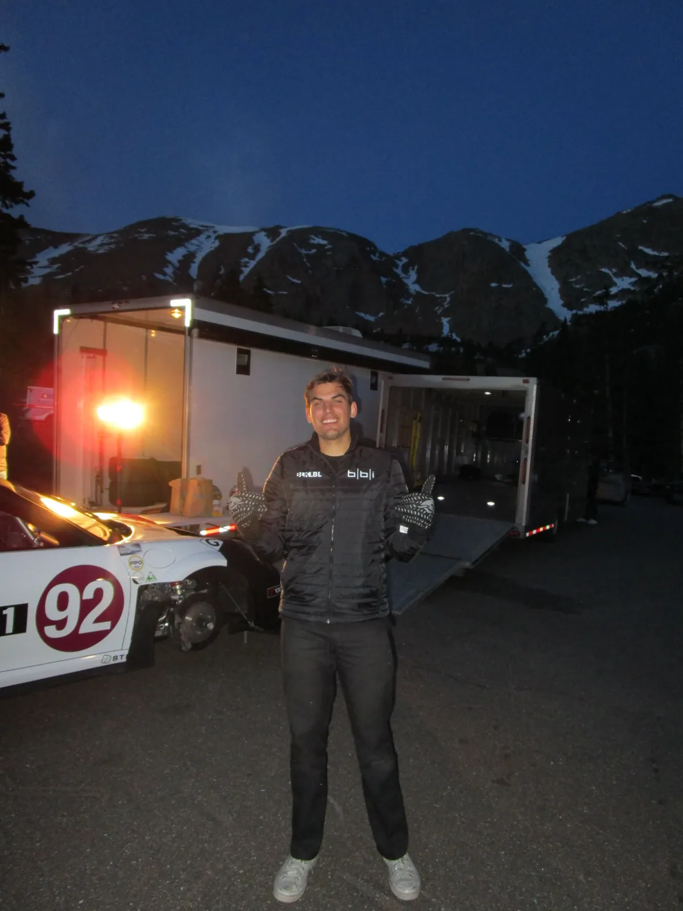

Get in touch

About me
What I do
What I love most about mechanical design is the balancing act: weighing function against form, and form against function, until a part gets both right. Automotive engineering puts that balance to the test on every project, and it lets me do it while working on one of my greatest passions: cars.
My background
It started in 2019, when I spent every dollar I had on a 1975 Datsun 280Z. I began with the basics: springs, shocks and a brake kit. One upgrade led to the next, and before long I had run through nearly every part on the market for the car. So I started designing my own, combining eBay finds with custom parts I made myself: a brake kit, wiring harnesses, interior pieces, an exhaust and more. Every square foot of the car has been cleaned up and reworked. That drive to keep improving snowballed into a mechanical engineering degree and a job building Porsches at BBi Autosport.
My approach
Every design takes time, and many revisions. There is no such thing as perfect, as it can always be lighter, stronger, or more beautiful. The trick is finding the happy medium between perfectionism and actually finishing a design.
Career
Capabilities